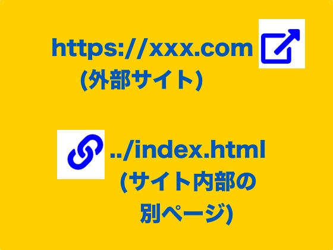
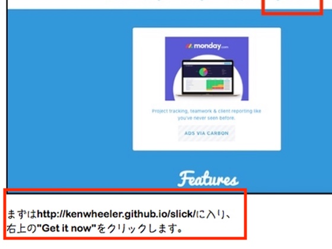
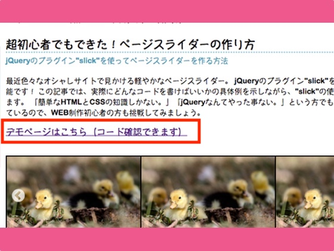
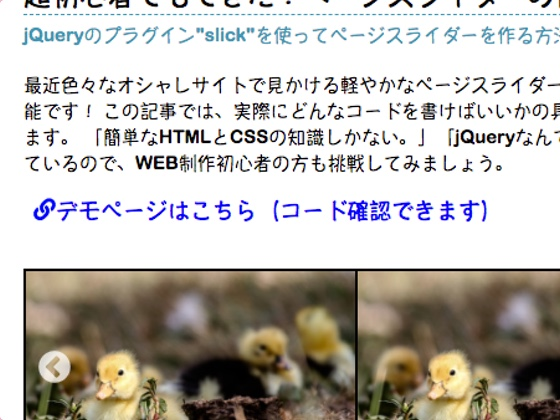

記事にリンクを貼る時、横につけるマークを使いこなそう！ 「内部リンク」と 「外部リンク」を使い分けられる様になったよという話。
記事にリンクを貼り付ける時のやり方は人それぞれ。 別にこの様な記号は入れないパターンもありますし、 もっとカッコいいリンクボックス（＝リンクカード） などを使ったリンクの貼り付け方もあります。（リンクボックスについてはまた後ほどまとめます。） ただ、最近よく見かけるこれらの記号、どうやって使うのかな？ と疑問に思ったので調べてみました。
この記事では、自分の記事へのリンクの貼り方・コードの書き方・記号の付け方についてまとめます。

まず、事の発端は他の記事を書いていた時。 リンクを貼り付けたいシチュエーションに遭遇しました。

ちなみに、このリンクはこのブログ外の別サイトに飛ぶリンク。
代わってこちらはこのブログ内の別ページに飛ぶリンク。
うーん、このままじゃ少し味気ない気がします。
さて、どうするか？
そこで決めたのが記号の導入です。
外部のサイトへ飛ばすリンクはこの記号 をリンクの後につけます。この四角に矢印ぴょんっみたいな記号 は 「外側に広がっていくよー。」ってのを表現しています。 なのでリンクの後につけて、外部リンクへと飛ばしていくイメージをもたせます。

対して内部リンクの記号は、リンクの前に貼ります。この記号はこの記事と内部の記事を結んでいる様子を表しています。内側へ、内側へという事です。うん、make sense ですねー。
今回、実際に書いたコードはこちらです。このようなリンクを作りたい人はご参考にどうぞ。
1、HTMLの<head>の中に以下のように書き込みます。
この記号はどこから持ってくるのか？そりゃもちろん Font Awesome からです！
Font Awesome の画像を使える様にするために、まずは以下のコードをHTMLの<head>に書き込みます。(2019/2/28時点)
<link rel="stylesheet" href="https://use.fontawesome.com/releases/v5.7.2/css/all.css" integrity="sha384-fnmOCqbTlWIlj8LyTjo7mOUStjsKC4pOpQbqyi7RrhN7udi9RwhKkMHpvLbHG9Sr" crossorigin="anonymous">
2、HTMLのリンクを入れたい場所にこの様に書き込みます。
説明がざっくりで申し訳ありませんが、以下がテンプレです。リンク先や文言だけ書き換えてお使いください。
リンクのやり方やFont Awesome
についてはあまり説明はいらないかな？みたいな独りよがりな解釈をした為、説明が薄めです。もし要望があれば詳しい説明を今後入れるかもしれません。
※target="_blank"は、リンクをクリックした時にもう一つ別タブを開いて他ページに飛ばすものなので、 基本は外部リンクの時だけ書き込んでいます。実際の使い分けはケースバイケースで。
//外部に飛ばした時のコード//
<a href="外部リンクのURL" target="_blank">
外部ページはこちら<i class="fas fa-external-link-alt">
</i></a>
//内部に飛ばした時のコード//
<a href="内部ページのファイル名など" ><i class="fas fa-link"></i>
内部ページはこちら</a>
3、CSSは以下の様に書き込みました。
私の基本のリンク用CSSはこんな感じです。 通常状態では、文字は青色で下線なし。マウスポインタが文字の上に乗った時だけ、下線が登場する。という仕様になります。
a:hover{
text-decoration: underline;
}
a{
padding: 8px;
text-decoration: none;
color: blue;
}
以上です。 今回は、「内部リンク」と 「外部リンク」 の使い分け方と、そのコードをまとめましたが、 次回はリンクボックスの作り方をまとめる予定です。 その３つを使い分けることができればリンクの貼り付け方は ほぼ完璧ですね。ではでは、お次はリンクボックスの回でー。
リンクカードを簡単に作る方法はこれ！